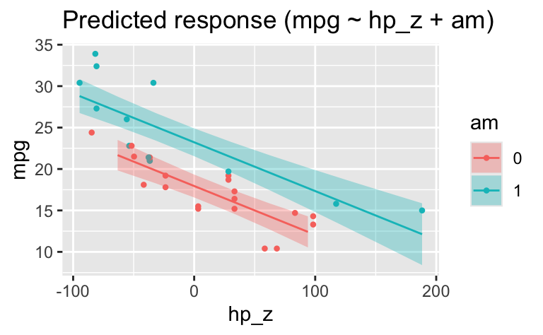

library(tidyverse)
library(easystats)
data(mtcars)
mtcars <-
mtcars %>%
mutate(hp_z = hp - mean(hp))adjustieren1a
regression
2023
string
qm2
qm2-pruefung
Aufgabe
Betrachten Sie folgendes Modell, das den Zusammenhang von PS-Zahl und Spritverbrauch untersucht (Datensatz mtcars).
Aber zuerst zentrieren wir den metrischen Prädiktor hp, um den Achsenabschnitt besser interpretieren zu können.
lm1 <- lm(mpg ~ hp_z, data = mtcars)
parameters(lm1)Parameter | Coefficient | SE | 95% CI | t(30) | p
------------------------------------------------------------------
(Intercept) | 20.09 | 0.68 | [18.70, 21.49] | 29.42 | < .001
hp z | -0.07 | 0.01 | [-0.09, -0.05] | -6.74 | < .001
Uncertainty intervals (equal-tailed) and p-values (two-tailed) computed
using a Wald t-distribution approximation.Jetzt können wir aus dem Achsenabschnitt (Intercept) herauslesen, dass ein Auto mit hp_z = 0 - also mit mittlerer PS-Zahl - vielleicht gut 20 Meilen weit mit einer Gallone Sprit kommt.
Zur Verdeutlichung ein Diagramm zum Modell:
estimate_relation(lm1) |> plot()
Adjustieren Sie im Modell die PS-Zahl um die Art des Schaltgetriebes (am), so dass das neue Modell den statistischen Effekt (nicht notwendig auch kausal) der PS-Zahl bereinigt bzw. unabhängig von der Art des Schaltgetriebes widerspiegelt!
Geben Sie den Punktschätzer für den Effekt von am in diesem Modell an!
Hinweise:
am=0ist ein Auto mit Automatikgetriebe.- Wir gehen davon aus, dass der Regressionseffekt gleich stark ist auf allen (beiden) Stufen von
am. M.a.W.: Es liegt kein Interaktionseffekt vor. - Beachten Sie die üblichen Hinweise des Datenwerks.
- Nutzen Sie
lm, um das Modell zu berechnen.
Lösung
lm2 <- lm(mpg ~ hp_z + am, data = mtcars)
parameters(lm2)Parameter | Coefficient | SE | 95% CI | t(29) | p
----------------------------------------------------------------------
(Intercept) | 17.95 | 0.68 | [16.56, 19.33] | 26.55 | < .001
hp z | -0.06 | 7.86e-03 | [-0.07, -0.04] | -7.50 | < .001
am | 5.28 | 1.08 | [ 3.07, 7.48] | 4.89 | < .001
Uncertainty intervals (equal-tailed) and p-values (two-tailed) computed
using a Wald t-distribution approximation.Die Spalte Coefficient gibt den mittleren geschätzten Wert für den jeweiligen Koeffizienten an, also den Schätzwert zum Koeffizienten.
Die Koeffizienten zeigen, dass der Achsenabschnitt für Autos mit Automatikgetriebe um etwa 5 Meilen geringer ist als für Autos mit manueller Schaltung: Ein durchschnittliches Auto mit manueller Schaltung kommt also etwa 5 Meilen weiter als ein Auto mit Automatikschaltung, glaubt unser Modell.
estimate_relation(lm2) |> plot()
am wird als numerische Variable erkannt.
Das können wir so ändern:
mtcars <-
mtcars |>
mutate(am = factor(am))lm3 <- lm(mpg ~ hp_z + am, data = mtcars)
parameters(lm3)Parameter | Coefficient | SE | 95% CI | t(29) | p
----------------------------------------------------------------------
(Intercept) | 17.95 | 0.68 | [16.56, 19.33] | 26.55 | < .001
hp z | -0.06 | 7.86e-03 | [-0.07, -0.04] | -7.50 | < .001
am [1] | 5.28 | 1.08 | [ 3.07, 7.48] | 4.89 | < .001
Uncertainty intervals (equal-tailed) and p-values (two-tailed) computed
using a Wald t-distribution approximation.Die Koeffizienten bleiben gleich.
Lösung: 5.28.
Aber im Diagramm wird am jetzt als Faktor-Variable erkannt, was Sinn macht:
estimate_relation(lm3) |> plot()
Man könnte hier noch einen Interaktionseffekt ergänzen.
Categories:
- regression
- ‘2023’
- string